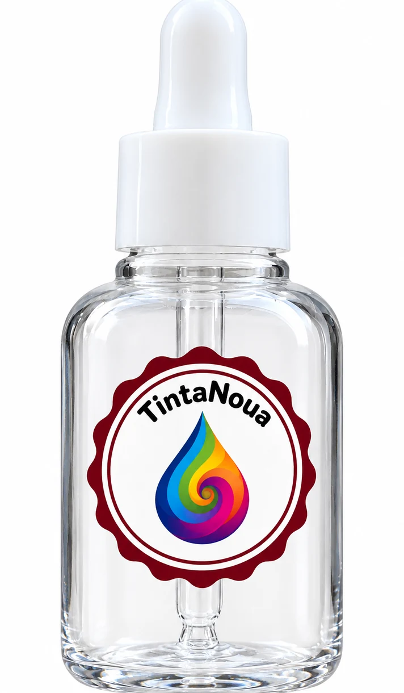

Etapa 01 · Preparación
Recepción y selección
Se inspeccionan las hortalizas frescas y se pesan para establecer la cantidad de materia prima del lote.
Tiempo de referencia10 min/kg
Proyecto universitario · UNFLEP
Tres hortalizas, tres tintas. Extraemos color de la zanahoria, la remolacha y la espinaca para crear tintas con las que puedes dibujar y escribir sobre papel.

Laboratorio digital
Elige un pigmento y un papel, ajusta el pincel y dibuja. Puedes llevarte tu muestra como imagen.
Ámbar-naranja
Zanahoria · β-caroteno. En el ensayo preliminar secó en 3–4 min sobre papel bond.
Ingeniería agroindustrial
Selecciona una etapa para seguir el recorrido de las hortalizas hasta el frasco de tinta.
Ver fotos de la prueba con remolachaEtapa 01 · Preparación
Se inspeccionan las hortalizas frescas y se pesan para establecer la cantidad de materia prima del lote.
Tiempo de referencia10 min/kg
Etapa 02 · Preparación
Se elimina la suciedad con agua potable y se aplica la desinfección definida en el protocolo antes de cortar el vegetal.
Tiempo de referencia15 min/kg
Etapa 03 · Preparación
El vegetal limpio se corta en trozos pequeños para facilitar la extracción del pigmento.
Tiempo de referencia15 min/kg
Etapa 04 · Extracción
Se trabaja el vegetal troceado con agua destilada y se vigila la temperatura. La prueba de espinaca se realizó en frío.
Tiempo de referencia20 min/kg
Fotos de la prueba con remolacha
Etapa 05 · Extracción
Un tamiz fino y una tela filtrante separan la fibra vegetal del extracto líquido.
Tiempo de referencia15 min/kg
Foto de la prueba con remolacha
Etapa 06 · Extracción
Se revisa el pH y se ajusta el extracto filtrado para preparar la formulación de la tinta.
Tiempo de referencia25 min/L
Etapa 07 · Mezcla
Se dosifican el extracto, el vehículo acuoso y el espesante que le da consistencia a la tinta.
Tiempo de referencia15 min/L
Etapa 08 · Mezcla
La mezcla se agita para distribuir de manera uniforme el pigmento y el espesante.
Tiempo de referencia15 min/L
Etapa 09 · Acabado
Se dosifica la tinta homogénea en frascos de 30 mL y se identifican con su etiqueta.
Tiempo de referencia20 min/lote
Etapa 10 · Acabado
El protocolo contempla revisar el color, la fluidez y el secado sobre papel testigo, y guardar muestras protegidas de la luz.
Tiempo de referencia20 min/lote
Ensayos preliminares · 2026
El equipo observó diferencias en la fluidez, el acabado y el cuidado que requiere cada tinta.
Comparar las tintasAmarillo-anaranjado brillante, con fluidez media y secado en 3–4 min sobre papel bond.
Rojo intenso a magenta, con trazo continuo y homogéneo durante la prueba preliminar.
Verde oliva a vegetal. El extracto se obtuvo en frío y requiere protección frente a la luz.
Comparación digital
Compara un mismo trazo digital en dos pigmentos y consulta qué observó el equipo al ensayar cada tinta.
Trazos ilustrativos sobre papel bond simulado
Zanahoria · β-caroteno
El equipo observó fluidez media y un secado de 3–4 min sobre papel bond.
Remolacha · Betanina
En la prueba preliminar, el trazo fue continuo y homogéneo, con un tono de rojo intenso a magenta.
Ficha para evaluación
La propuesta de gotero sirve para dosificar el pigmento en dibujos, caligrafía y manualidades. En la ficha puedes consultar el proceso, el balance por lote y los costos directos estimados.
Leer ficha del proyecto